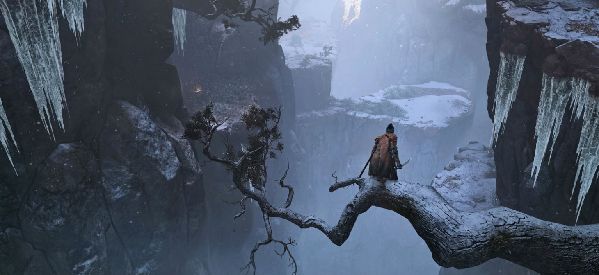

Sekiro: Shadows Die Twice

Sekiro: Shadows Die Twice — відеогра жанру action-adventure, розроблена японською компанією FromSoftware і видана Activision для платформ Microsoft Windows, PlayStation 4 і Xbox One. Вихід гри відбувся 22 березня 2019 року.
Sekiro: Shadows Die Twice являє собою фентезійну екшн-гру з виглядом від третьої особи; її дія відбувається у феодальній Японії в період Сенгоку. Під управлінням гравця знаходиться Секіро, воїн з кістяною рукою, озброєний мечем і мотузкою з гаком; він знаходиться на шляху помсти. Гра схожа з Bloodborne, однією з попередніх ігор FromSoftware, і також зображає похмурий світ, гротескних ворогів і битви, в яких від гравця вимагається більше атакувати, ніж захищатися.
Тизер гри — без назви, але з гаслом Shadows Die Twice — був представлений на заході The Game Awards в 2017 році. На виставці E3 2018 в рамках прес-конференції Microsoft гра була анонсована під повною назвою — Sekiro: Shadows Die Twice, і було оголошено, що її видавцем виступить американська компанія Activision. Керівником розробки гри є Хідетака Міядзакі, голова FromSoftware і творець серії Souls.
Sekiro: Shadows Die Twice — action-adventure від третьої особи. На відміну від серій Souls від FromSoftware, в грі менше рольових елементів, відсутня система створення персонажа і можливість вирівнювання його навичок, а також немає багатокористувацького режиму, однак вона включає в себе модернізацію спорядження, дерево навичок і невеликі можливості кастомізації. Замість атаки противника для нанесення шкоди здоров'ю бойова система Sekiro сфокусована на використанні катани для атаки стійки і балансу противника. Така тактика призводить до втрати балансу і відкриття вразливості у супротивника, що дозволяє завдати одного смертельного удару. Інколи, щоби здолати більш могутніх суперників (на кшталт босів чи мінібосів), потрібно виконати смертельний удар двічі. У грі також присутні стелс-елементи, що дозволяють гравцеві усувати ворогів, непомітно підкрадаючись до них. Персонаж гравця має можливість використовувати різні інструменти, такі, як гак для захоплення, щоб допомагати собі в бою і розвідці. Якщо персонаж гравця помирає, то за певних умов може відродитися на тому ж місці. В грі відсутня багатокористувацька складова.
На головну сторінку
Назад